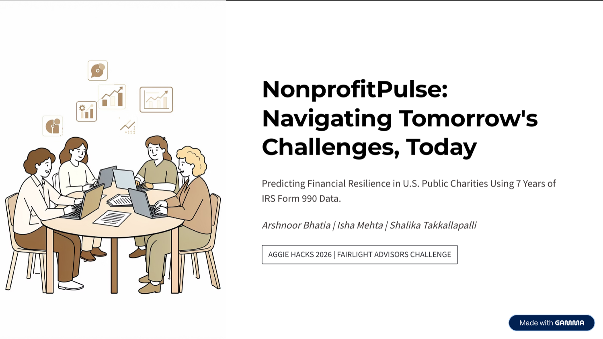

AI analytics web app
NonprofitPulse
A nonprofit financial resilience dashboard that turns IRS Form 990 data into durability scores, peer benchmarks, funding-shock simulations, and plain-English AI explanations.

Problem
Nonprofit advisors and funders need a faster way to understand which organizations are financially resilient, weakening, or vulnerable to funding shocks.
What I Built
- Built a Flask dashboard backed by SQLite for nonprofit search, organization profiles, peer comparison, and trend views.
- Engineered scoring logic across liquidity, revenue diversity, efficiency, growth, and governance using IRS Form 990 fields.
- Added funding-shock scenarios and an AI explainer grounded in cached nonprofit data and project context.
Evidence
- Uses 7 years of IRS Form 990 data.
- Includes 5-pillar resilience scoring, peer benchmarking, trend lines, shock simulation, and Ask AI.
- Hosted as a live Hugging Face demo.
Tech Stack
PythonFlaskSQLitePandasIRS Form 990ProPublica APIOpenAIHugging Face Spaces